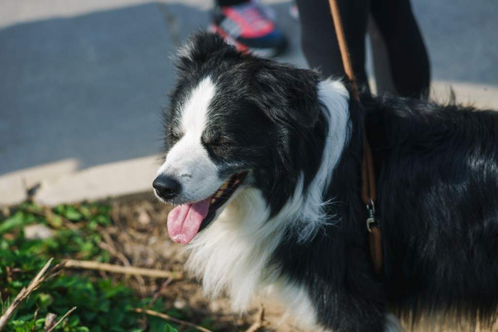
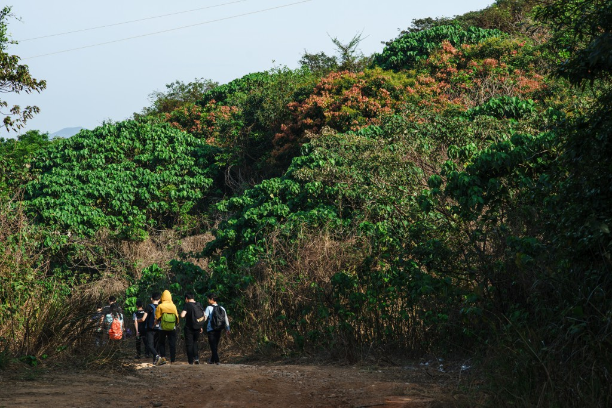
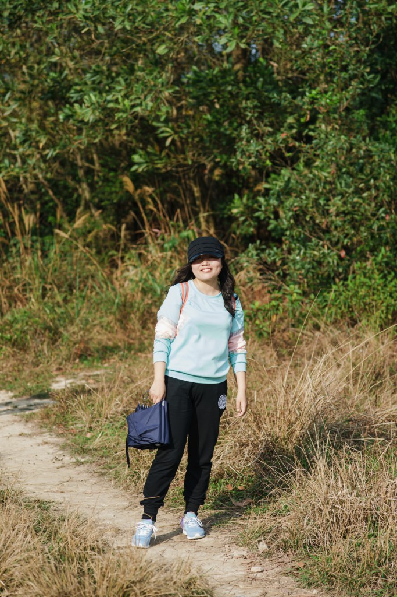
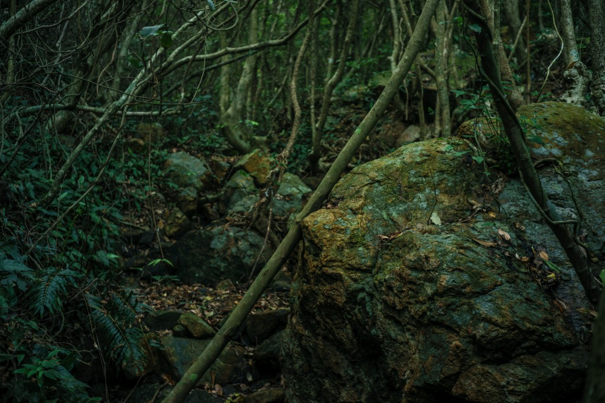
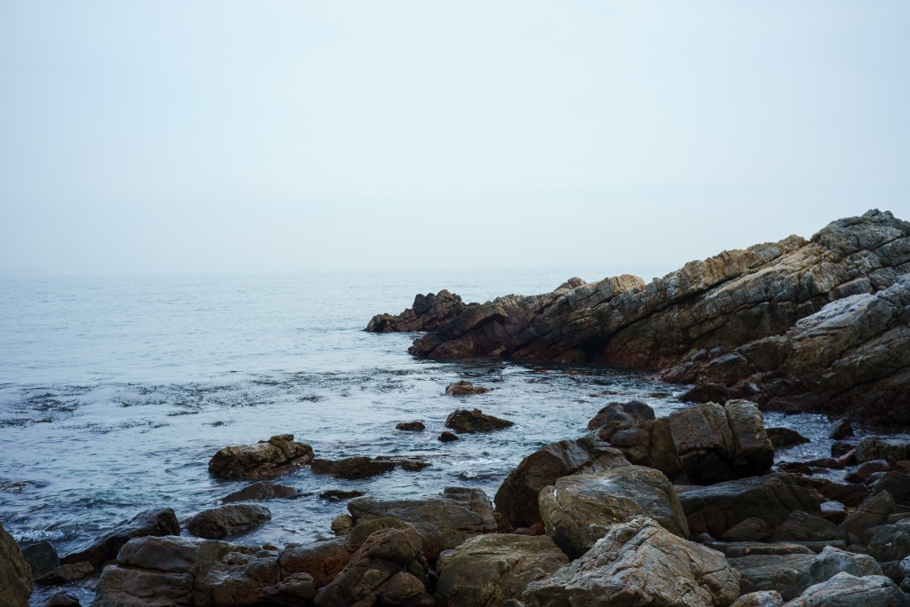
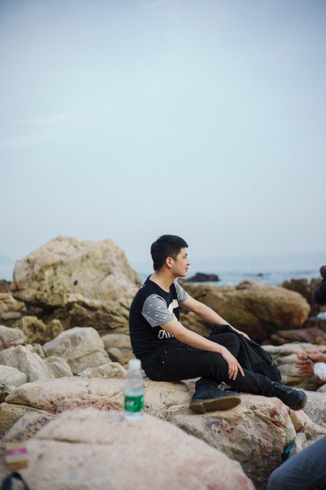
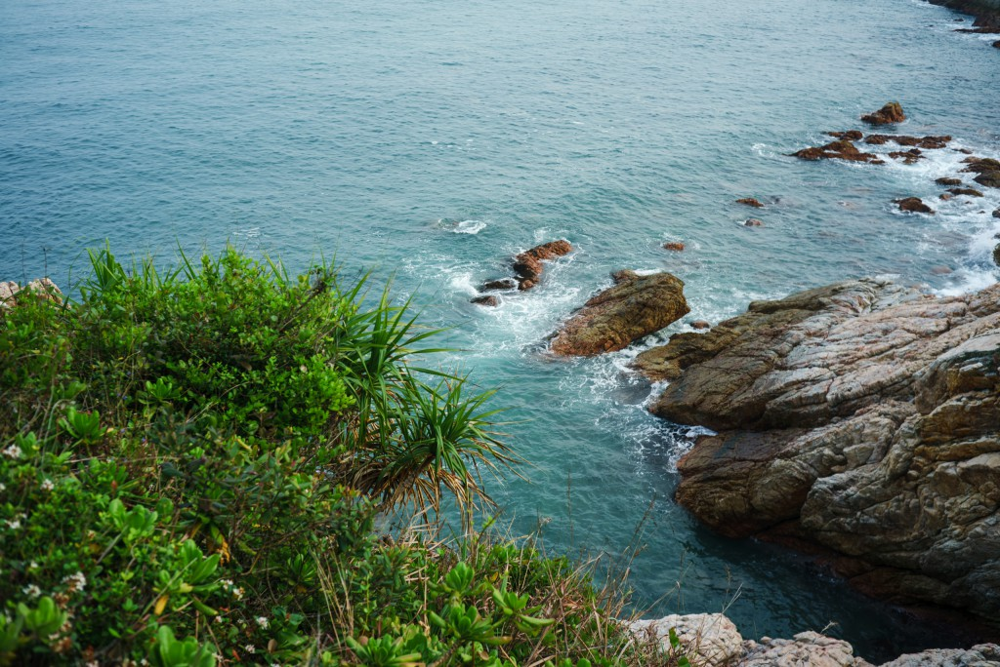
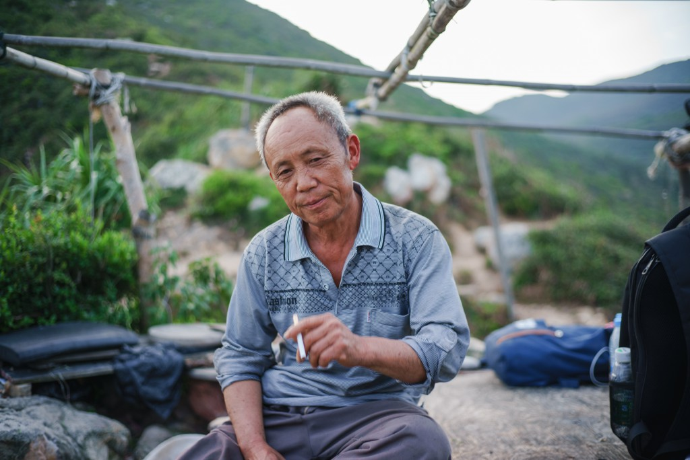
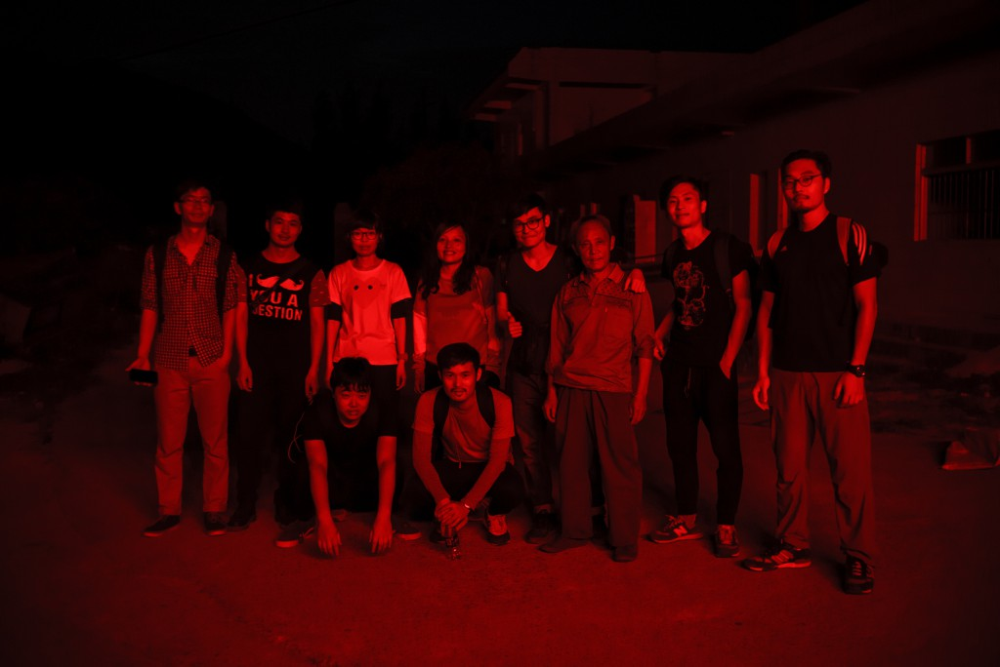

出发以前，不止一位朋友警告过我：从东涌到西涌可不简单，要有心理准备。但在我的想象里，它仍然只是一段漫长的海岸线漫步而已——也许时间会久一点，五六个小时？
不过当我们翻越婚纱基地的防护栏，站在东涌的海边，不禁露出了自信的微笑。不远处，海岸线上的小山头高低起伏，它们看上去并不像先驱们形容的那样难以征服，我们更在意的是此时的天气，灰白的云层遮盖了天空，但穿过弥漫于空气中的雾霾，强烈的紫外线还是让我们觉得燥郁难耐，海面上灰蒙蒙一片，这样的天气既不适合徒步，显然也不是拍照的好时机。
早一步抵达的我们在沙滩上踩着贝壳吹着海风，饱览胜景一小时后，我们的队长终于赶到了集合点，下车时小伙伴们颇为尴尬，当然一脚油门踩到了惠州之类的糗事并没有发生，重要的是我们全员到齐。略事休整后，我们抱成一团拍下了出发前的激情合照，这时一小撮动机不明的同学坚称要为团队牺牲，把车开到西涌去提前准备好酒店和晚上的聚餐，剩下的伙伴们居然对此毫不领情，报以轻蔑的眼神便怀着斗志向西涌进发了。
不料我们出师不利，兜兜转转半小时之后，发现下游的渡桥早就关闭了，问过好心的土著大妈才知道，要绕到对岸的出发点必须沿河上溯好几里路。我们只好重振旗鼓继续前行，一路经过村庄、河流，修建中的水库工地，一不小心就会踩到羊粪的山间小径，终于来到一道高峻而悠长的陡坡下。当时的我已经感觉自己快走不动了，前面的同学们虽然谈笑风生，但我知道他们只是不想暴露自己已经后继乏力的窘况而已。
还没有走到起点，Peter就已经又累又热，春晓只好带着它脱离穿越的行列。
必须强调，并不是我走得慢被他们落下了，而是拍这样的画面就得等他们先到那个点。
确实，爬上那道坡的我们已经疲惫不堪，但转过几道弯之后，当山风吹过，大海豁然展开于目前，海浪冲击石礁的声音直灌耳边，每个人的情绪仿佛瞬间被抛到空际，一下子都高扬了起来。
尽管低调如斯，但 Beryl 即将展露她惊世骇俗的超强耐力。
不过在这里我们第一次产生了分歧，此去西涌，大路就在这里中断了，接下去都是丰草密林中的羊肠小道，并且指向不同的方向。有的伙伴便想着沿山脊一路走，地势高旷，视界阔远，四周风景一览无遗；但更多人想着去海边玩耍，哪怕那条路蜿蜒而下，眼看就埋没在草堆之中，可能要危险得多。
面对大海，每个人都显得如此渺小，所以隆哥的表情就是：你们有什么好争的啊？
最后寡不敌众，我们最终选择了下海的艰险小路，虽然它的艰险远远超出我们的预期。
 再次看到天空的那一刻，我们体会到了从矿难中逃出生天的矿工的喜悦。
再次看到天空的那一刻，我们体会到了从矿难中逃出生天的矿工的喜悦。
才出龙潭，又入虎穴，这一段更加深邃，秀木枯泉，碧石青苔，好像来到了亚马逊热带丛林。
才出龙潭，又入虎穴，这一段更加深邃，秀木枯泉，碧石青苔，好像来到了亚马逊热带丛林。
蓦然回首，掉队的伙伴已经和我们相去甚远，海风阵阵，吹走了他们“等一等”的呼号声。
面朝大海，春乍暖，花正开，我们一路前行。
但要是觉得大海母亲很容易亲近，那一定是你产生了幻觉。
 何谓人间路不平？探密林，越深涧，穿幽径，下高岩。
何谓人间路不平？探密林，越深涧，穿幽径，下高岩。
何谓笑踏人间不平路？那怕脚底就是悬崖峭壁。
仰观其下，倍觉艰险，小心啊两位。
终于攀岩而下，来到了大海的身边，我们一致认为这里是拍电影的好地方。
终于来到了大海的身边，我们一致认为这里是拍电影的好地方。
瞧瞧你那骄傲自满的手势，前面的路还长着呢。
说实话，我之前并没有想过西涌的海可以这么美，作为出生在内陆丘陵地区的农民之子，我生平所见过的海并不多，但越过重重险阻终于来到海边的那一瞬间，我忽然想起巴厘岛海神庙附近的海，那确实是我记忆中最美的海了——东西涌之间的海真的很美，尤其是当你钻出幽暗深邃的丛林站在空阔的海边时，那种强烈的空间落差会让你对大海的美产生更深刻的理解——当然，如果每个穿越者都能带走他们所产生的垃圾，那印象就更完美了。
不过我们并没有太多的时间停下脚步欣赏这美景，抵达海边已经花费了我们一个多小时，要在天黑之前抵达西涌镇，我们必须抓紧时间。但不幸的是，和我们所想的从此就可以海滨漫步完全不同，越过一段崎岖不平的礁石区之后，前面的路又断了，我们必须攀岩而上，重新走上山间小路。

不抱怨，不气馁，每个小伙伴都成为了勇敢的攀岩能手。
海浪如此汹涌激荡，他们如此淡定从容。
白教练矫若灵猿，即使这岩壁的角度已经接近九十度。
登临碣石，以观沧海，对酒当歌，人生几何？夕阳正西下，隆哥在思考。
如果我没有提醒，你能发现队伍的最前端是两位女生吗？
脚蹬滑板鞋，不走寻常路。

{kind=link}
{kind=link}
{kind=link}
{kind=link}
{kind=link}
{kind=link}
{kind=link}
{kind=link}
{kind=link}
{kind=link}
{kind=link}
{kind=link}
{kind=link}
{kind=link}
{kind=link}
{kind=link}
{kind=link}
{kind=link}
{kind=link}
{kind=link}
{kind=link}
{kind=link}
{kind=link}
{kind=link}
米克仍然尽心尽责地继续着他的现场直播。
{kind=link}
Beryl 仍然保持着她一路领先的碾压姿态。
再次从山路蹒跚而下，下到海边，每一步都感觉绵软无力，一不小心就会踩空掉在礁石的缝隙之间，这一次我们真的无力为继，只能停下来休息一会了。忽然想到前辈们的谆谆教诲，我只能恨他们为什么不讲得清楚一点，艰苦的跋涉是多么轻描淡写，这明明就是突破极限的修炼之旅了好吗？
{kind=link}
篮球打满全场从不需要替补的米克也不得不坐下来喘口气了。
永远是风轻云淡的表情，ICE 的心也许像深海一般静谧。
{kind=link}
永远是风轻云淡的表情，ICE 的心也许像深海一般静谧。
虽然笑得活力四射，但瘫倒在礁石上的姿态暴露了波神脱力的事实。
{kind=link}
虽然笑得活力四射，但瘫倒在礁石上的姿态暴露了波神脱力的事实。
一直紧跟 Beryl 走在队伍的最前面，今天的兔子也非常顽强。
{kind=link}
一直紧跟 Beryl 走在队伍的最前面，今天的兔子也非常顽强。
歇了不久，我们又继续前进。看看天色，太阳已经落山，壮丽的余晖依然笼罩天际，之前在山脊上眺望，东西涌之间的地形好像大自然探入海中的五指巨爪，一想到我们才刚越过其中的两个山头，刚刚走了一半而已，我们就不免有些焦虑。无论是蜿蜒曲折的山路，还是乱石丛生的海边，天黑之后都非常危险，留给我们的时间不多了。
再次上路，美丽的大海依然给我们的每一步增添能量的动力。
{kind=link}
再次上路，美丽的大海依然给我们的每一步增加前进的动力。
{kind=link}
海面上的光线也渐趋黯淡。
当我们用尽全力，总算爬到半山腰，一位骨骼清奇的老人出现在一处简陋搭建的休息棚内。累了困了，东鹏特饮，还有甘甜的矿泉水和新鲜的黄瓜，在我们眼中，老人此刻的丰采已经盖过了天王巨星谢霆锋。闲谈中我们得知，如果按计划继续前进，到西涌还需要一个半小时，我们看着渐黑的天光，感觉心都要随着太阳一起坠入黑暗，“那我们该怎么办？”
老人微微一笑，徐徐点燃一支香烟，“我在这里十几年，这种情况不知道遇到过多少，所以我特地开辟了一条捷径。”他稍稍一顿，淡然吐出一团白色烟雾，向上腾升。“从这里往上走，有一个天文台，从天文台插过去，只要十几分钟就能到镇上，而且是大马路。”
我们顿时欢欣雀跃起来，饱饮泉水怒啃黄瓜之后，就跟着老人往更高处走去，果不其然，峰回路转，走到盘山公路上，天方断黑。虽然公路仍然陡峭，但比起之前的种种坎坷曲折，已经美似金光大道。
穷途末路不要放弃，总会有这样的老人现身指路，要相信这才是电影的完美结局。
{kind=link}
穷途末路不要放弃，充满智慧的长者会为你现身指路，要相信这才是电影的完美结局。
{kind=link}
看着手中鲜嫩的小黄瓜，单身的少年陷入了微妙的迷思。
{kind=link}
队长的感激都体现在行动上了。
{kind=link}
迎着最后一抹晚霞，我们踏上了平川大道。
{kind=link}
当我们下山抵达西涌，已经是漆黑一片了。
和我们合影之后，这位乐天健谈的老人事了拂衣去，深藏身与名。
{kind=link}
和我们合影留念之后，这位乐天而健谈的老人事了拂衣去，深藏身与名。
我们的穿越东西涌至此结束，三月二十七日三点半从东涌出发，七点半抵达山下的西涌，全程四小时。至于穿行于漆黑的海边，在晚潮声中一边大喊大海母亲一边追逐奔跑，最后抵达落脚的酒店和开车先行的小伙伴们会合，那又是另外一个悲欣交集的故事了。这段旅程有欢笑，有汗水，没人放弃，没人抱怨，每个人都几乎突破了自己的体力极限，互相鼓励，彼此扶持，希望这一篇略显啰嗦的文字，能再现那段崎岖而壮丽的冒险旅程，能重温那段艰辛又温暖的珍贵回忆，and keep it forever。